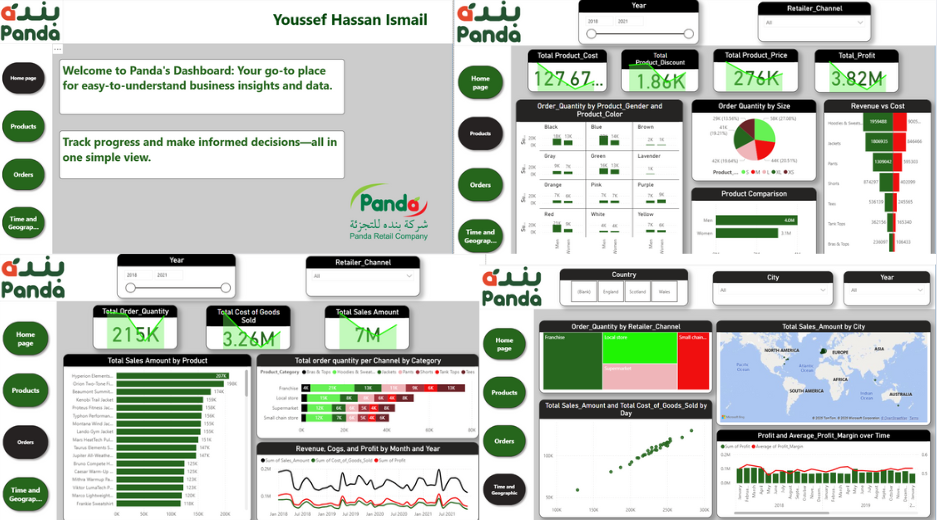
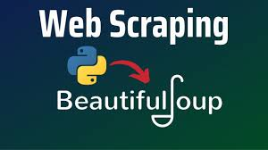

This project involved cleaning a retail company’s sales dataset by removing duplicates, handling missing values, and standardizing formats. After preparing the data, an interactive dashboard was created to visualize key metrics such as sales trends, product performance, and customer insights, enabling clearer analysis and better decision-making.


This project involved cleaning an anime dataset by handling missing values, correcting inconsistencies, and standardizing formats. Exploratory Data Analysis (EDA) was then performed to uncover patterns in ratings, genres, and popularity, providing insights into viewer preferences and trends..
This project involved web scraping the "Wuzuuf" website using Selenium to extract job details such as job name, company name, description, type enabling structured data collection for analysis.

This project involved web scraping the Wuzzuf website using BeautifulSoup to extract job listings, capturing fields such as Type, Job Name, Company Name, and Region. The collected data was cleaned and structured into a dataset, enabling analysis of job trends, company postings, and regional distributions.

This project involved analyzing the Adventure Works database using SQL to extract business insights. Key tasks included querying sales, customers, products, and orders to identify trends, calculate revenue, and evaluate performance metrics. The analysis provided actionable insights for decision-making and highlighted patterns in sales and customer behavior..